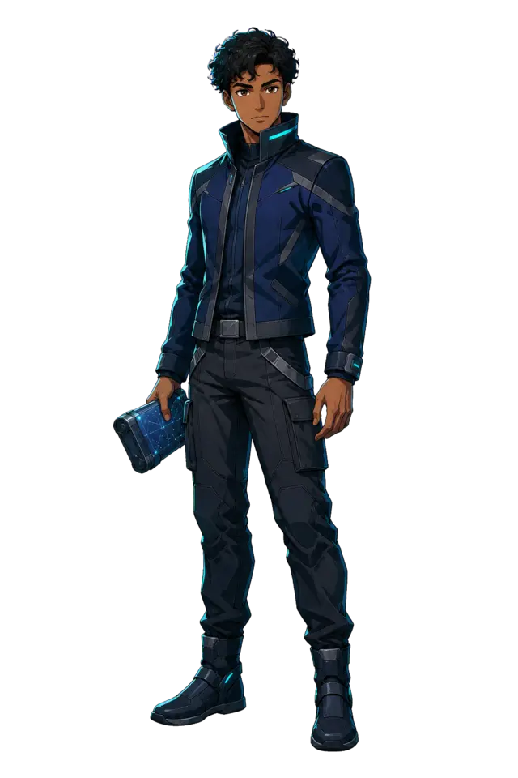
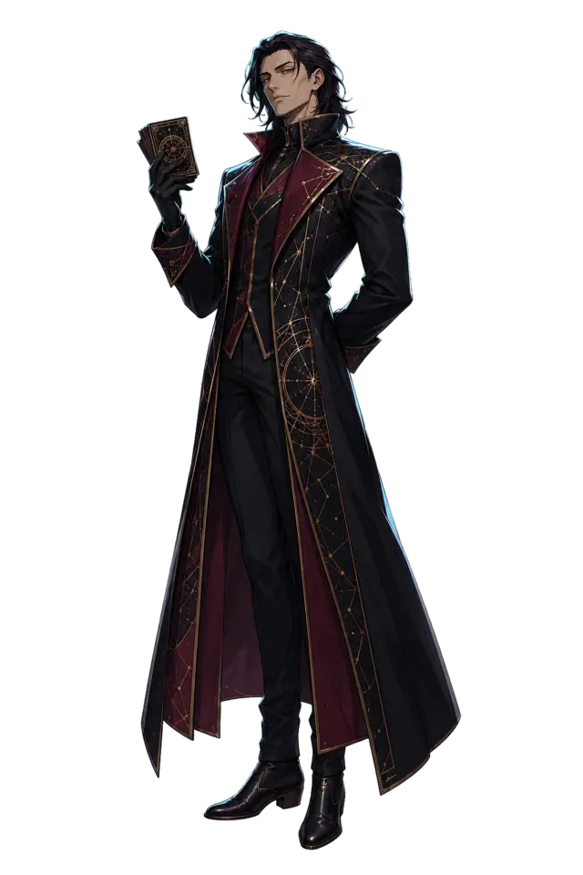
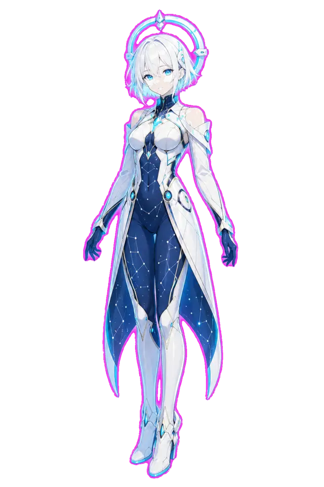
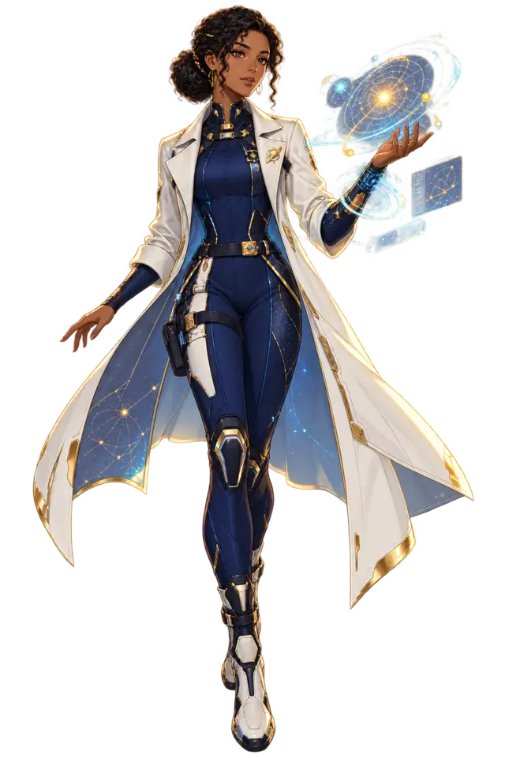
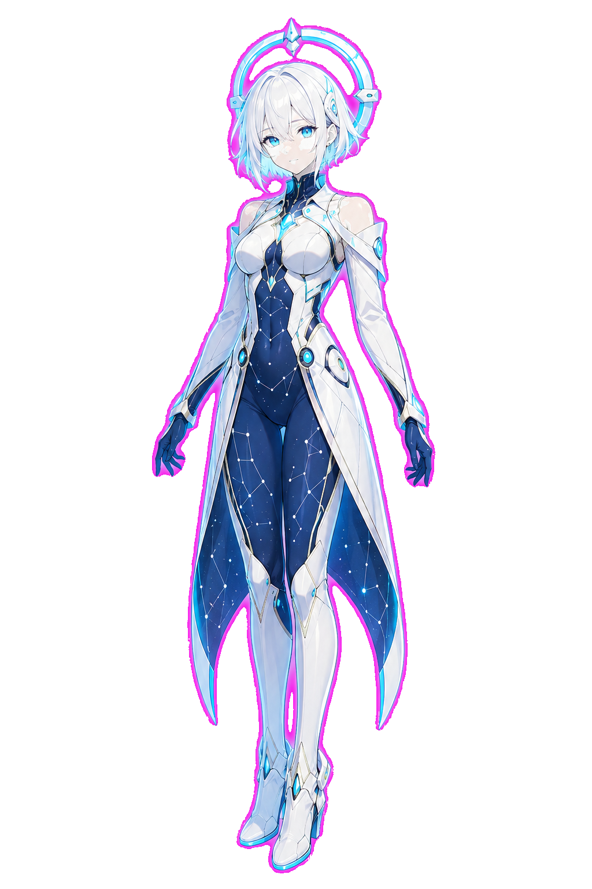
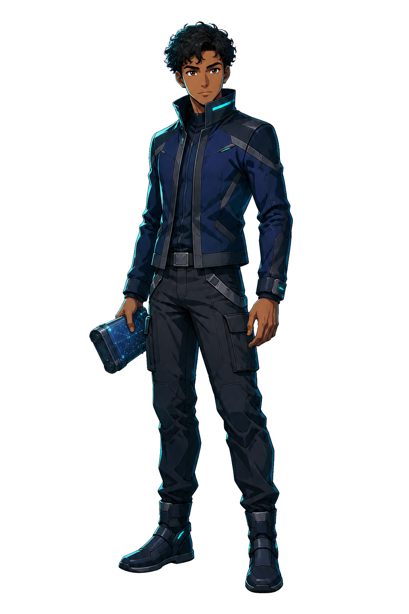
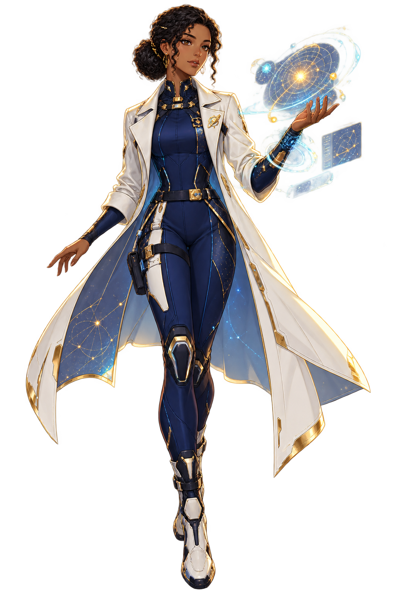
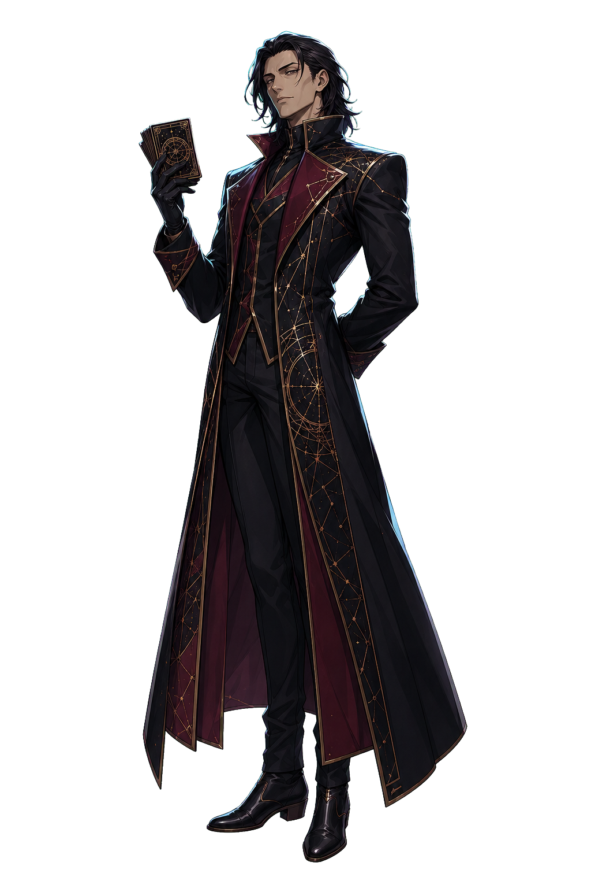
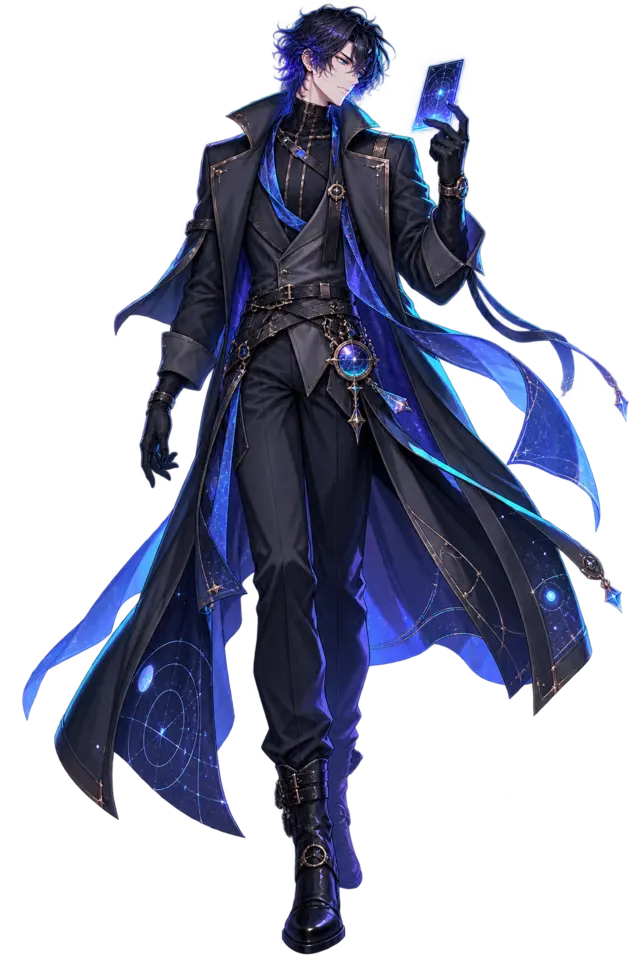

NARRADOR
IDENTIFIQUE O SEU VETOR
Como Json vai ler o céu?
A classe não limita suas escolhas: ela mostra o que você aprende a enxergar primeiro.
CAPÍTULO 01

PROVA 01 / 08
Vidas✦ ✦ ✦
0 / 32
Padrões ajudam a localizar o céu, mas não unem as estrelas fisicamente.
 Imagem real de missão espacial · NASA
Imagem real de missão espacial · NASA
ROTA DE AURORA
Mapa da jornada
REGISTRO RESTAURADO
Aurora não é um prêmio.
Ela é uma pergunta aberta: o que faremos quando finalmente entendermos o céu?

JSONAURORA
MIRA VALE
O CARTÓGRAFOFIM DO PRIMEIRO MAPA
Créditos
História e universoAURORA
Criado porKayque F S Alves e Cláudia Aparecida de Paula.
Produzido por@SyraDevOps
Ciência em cada descobertaFísica, astronomia e curiosidade
Lição finalOlhar para o céu é começar a fazer perguntas.
SINAL PERDIDO
A rota se fechou — por enquanto.
Mira usa o último pulso do mapa para devolver Json ao começo deste capítulo. Três novas vidas, a mesma curiosidade.
